CACIC · Octubre 2026
Plataforma
IoT
Modular de
Adquisición
Distribuida
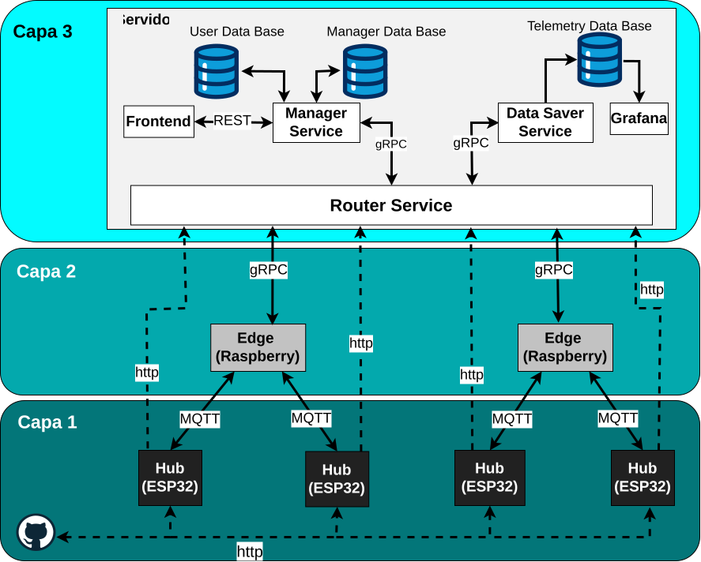
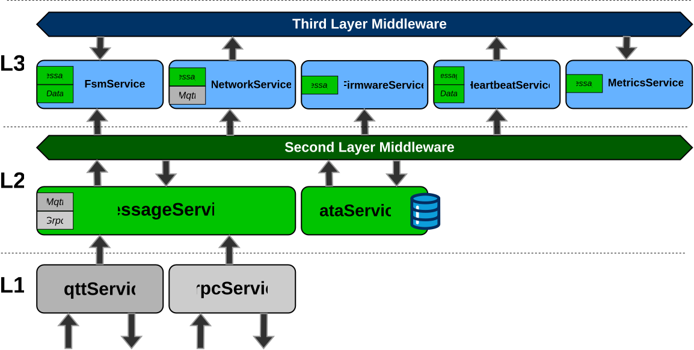
Protocolo de Coordinación y Balanceo Post-Fallo. Controla el envío de mensajes respaldados cuando el Edge inicia su operación y evita ráfagas de tráfico.
Protocolo de Vinculación. Formaliza el descubrimiento y registro persistente entre dispositivos.
Protocolo de Sincronización de Configuración. Mantiene la consistencia entre la configuración local y el servidor mediante confirmaciones.
Protocolo de Respaldo de Alertas. Permite a los Hubs saltear un nodo Edge caído y enviar alertas críticas directamente al servidor por HTTP.
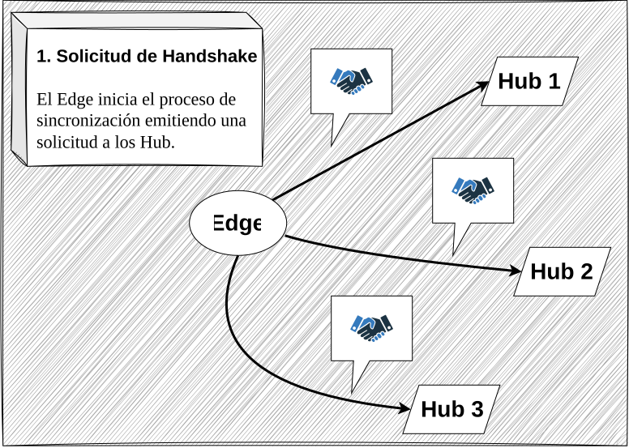
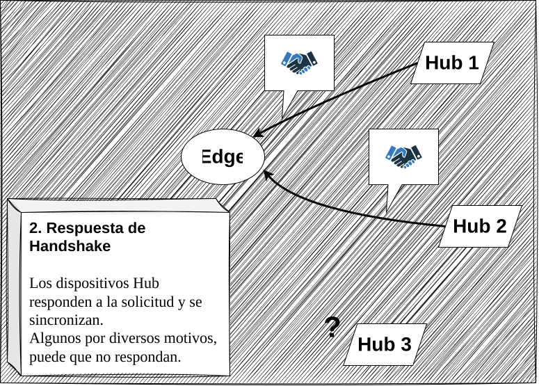
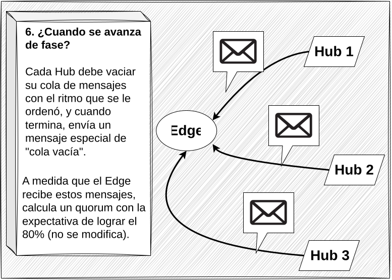
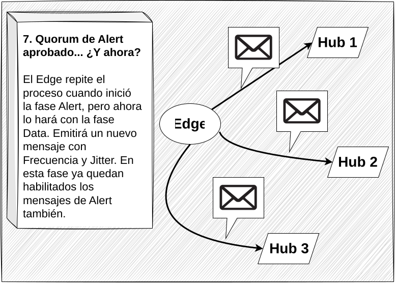
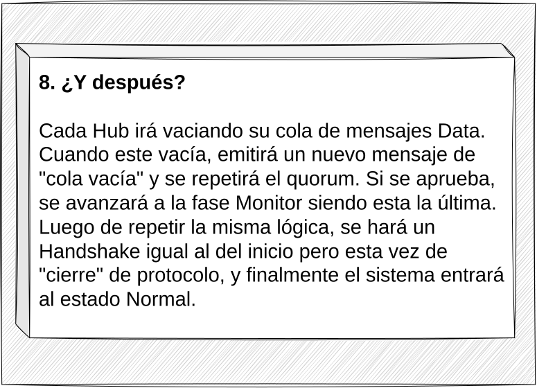
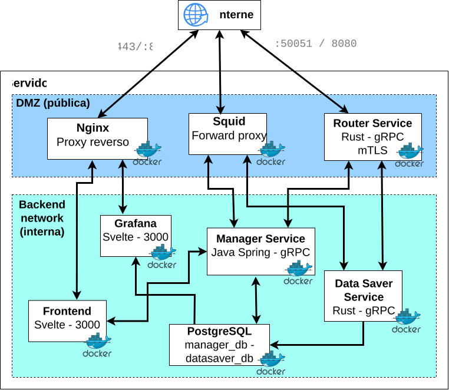
Preguntas y debate